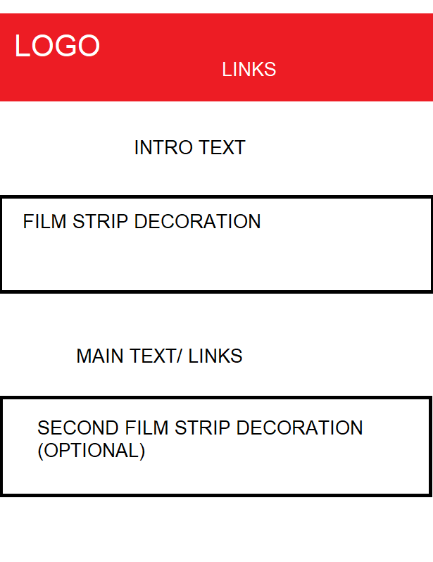
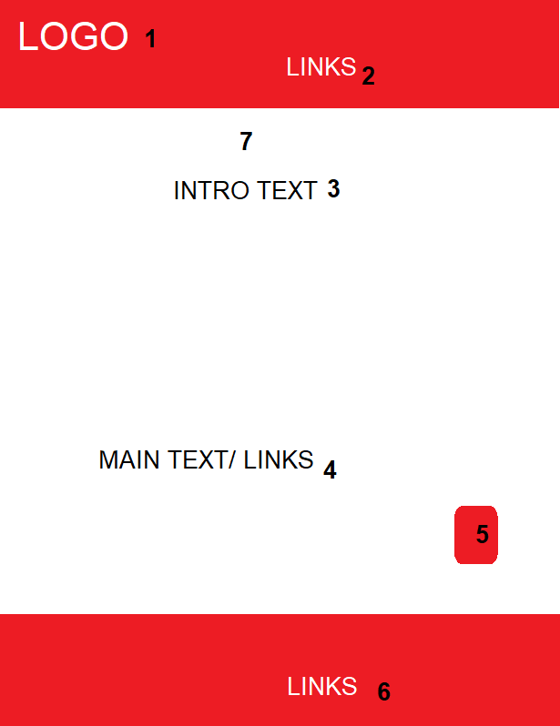
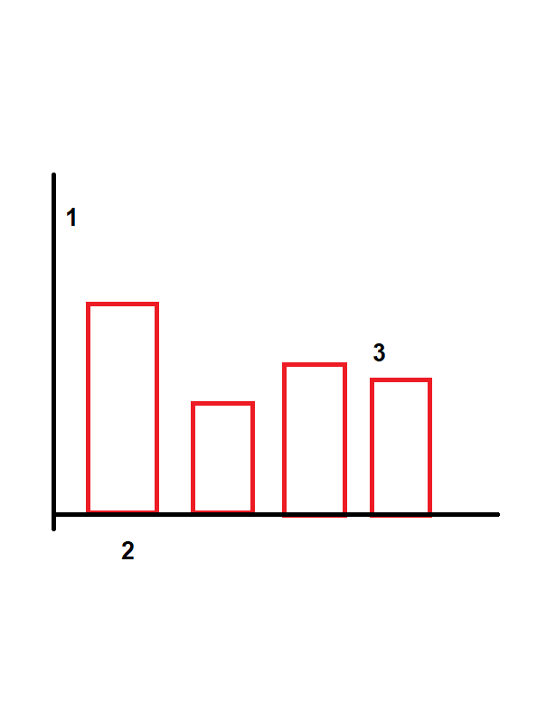

Styleguide
Below is the first iteration of my wireframe, followed by more recent ones.
 
In the second wireframe, as you can see, I have removed the filmstrip. I have numbered the elements I would like to speak about.
In the third wireframe, I have added the background image, as a colour (black). This is an indication of the change.
At position 1, is the logo. This is the name for the site, displayed in the largest font size on any given page. This serves as a constant reminder of the sites name, and content.
At position 2, the links in the top nav bar. This provided linkage between all pages on the site. As I have mentioned, these links will change on hover. The font size is smaller than the logo, but remains big enough to be seen. The white color on the red background gives the links and the logo, a popping effect. Users will be able to differentiate between logo and links due to the size difference, and the fact that links turn black on hover. The black color remains visible, so the link does not dissapear, on hover.
At 7, is the page title, telling the user which page of the site they are on.
At 3, is the introductory text, informing the user on what can be found on this page.
At 4, in the center of the page, both horizontally and vertically, is nested the main content. This makes it easy to navigate to. In the case of the main content being links, the links are bold and change color on hover, using the inverse of the colors used in the nav bar. If the main content is text, the text is alligned along the center, again to streamline the reading process.
5 is the back to top button, providing easy navigation, particularly on text heavy pages such as this one. The button floats, and moves with the screen, so the user can return at any time, not just when they reach the end.
6 is the footer bar, along with the links to the pages. Had I been inclined to share social media information, I would've added it here. The extra links give more oppurtunities for navigation should the user require it.
Below is the design of my graph.
I split each of the three graphs on seperate pages. I did this, to create an effect of the story unfolding across each graph.
Each graph became more complex with the increase in sample size changing the results accordingly. I think the story the data tells is a good one. Its an indicator of which decade has made the MOST best movies, with surprising reults. Also with some simple maths, users can find out the percentages of the data, leading to statements like the one I had on my last graph.
The splitting of the graphs onto three different pages was also done in an attempt to avoid bombarding the user with too much info. By chunking it, so to speak, I was able to get the user acclimatised to the data sets, and thus get better understanding and appreciation for the final results.